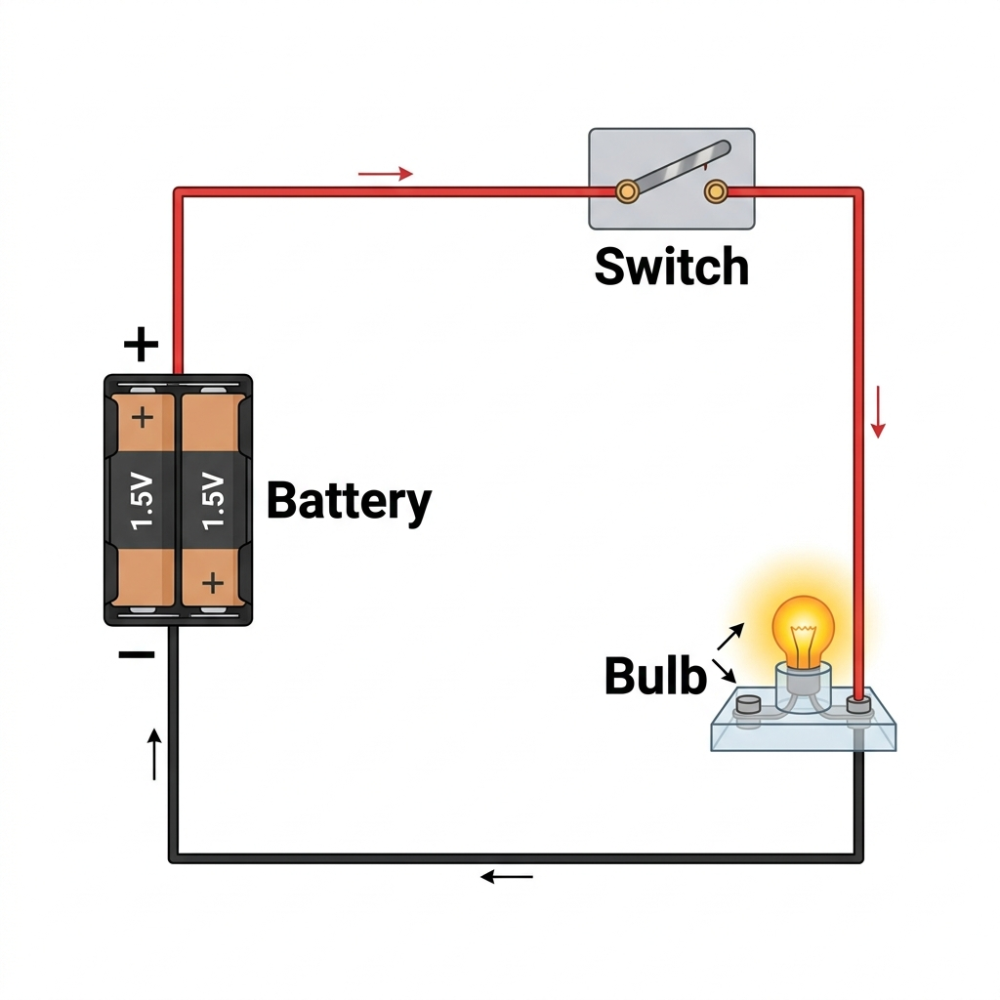

How do we turn things on and off safely?
Think about a light in your house. When you flip the switch, the bulb instantly glows.
What is happening inside the switch to control the electricity?
Hook students with the bedside lamp or classroom light switch. Ask: What happens inside the switch when you press it?
Listen for answers about "breaking" or "completing" the path. This builds towards the bridge analogy.
Today we will explain how a switch controls a circuit and represent our builds using conventional circuit symbols.
Today we learn how switches control electricity, and how to draw the circuits we build.
Read the learning intention and success criteria. Note that standard focuses on "conventional representations on a grid" while support pathway uses simplified language "use standard symbols".
Answer on your mini-whiteboard:
Talk with your partner and answer:
Quick retrieval check. Emphasize that a complete path of conductors from the source to the load and back is required. A switch is just a controlled gap in this path.
A switch controls a circuit by **opening** or **closing** the conducting path.
The switch creates an **air gap** in the circuit.
Since air is an insulator, electricity cannot flow. The path is **incomplete**.
The metal contacts inside the switch touch.
This completes the metal path, allowing electricity to flow. The path is **complete**.
A switch acts like a bridge for electricity.
The bridge is **up** (open).
There is a gap. Electricity cannot cross the air. The light stays off.
The bridge is **down** (closed).
The metal parts touch. The path is complete, and the light turns on.
Use the bridge analogy: open switch = bridge up (cars/electricity can't cross), closed switch = bridge down (safe path is complete).
Address misconception: a switch is not a source. It just opens or closes an existing path.
If the switch in a classroom light is **OPEN**, will the light be ON or OFF?
Write **ON** or **OFF** large on your board and hold it up!
If the bridge is **OPEN** (up), will the light be ON or OFF?
Hold up your board: ON or OFF
Scan responses. If students confuse open/closed with lights on/off, explain: "Open means there is a gap (hole) in the path. If there is a gap, electricity stops. So Open = OFF."
Different switches function in different ways depending on their mechanical action:
We use different switches for different jobs:
Demonstrate a physical rocker switch and a push button if you have them. Emphasize "momentary" vs "maintained" control. Students will test both in the practical work.
Scientists draw schematic diagrams rather than artistic pictures. We use standardized symbols:
| Component | Standard Symbol | Key Connection Rule |
|---|---|---|
| **Cell / Battery** | Long line (positive +), short thick line (negative -) | Wires connect to both ends |
| **Light Bulb** | Circle with an 'X' inside | Path goes through the circle |
| **Switch (Open)** | Two circles with a slanted line pointing up | Shows the break clearly |
| **Switch (Closed)** | Two circles with a flat line connecting them | Shows a complete line |
Scientists use standard drawings called symbols. Here is our symbol key:
Introduce the symbols. Emphasize that standard drawings look the same all over the world, which is why scientists use them.
Remind students: Wires must be drawn as straight lines, not curves.
How to draw a circuit diagram from a real-life build:
1. Real Layout (Image)

2. Standard Schematic Diagram
+---[ Battery ]---+
| |
| [Bulb]
| |
+---[ Switch ]---+
How we draw a diagram from our build:
1. Real Build
2. Circuit Drawing
+---( Battery )---+
| |
| ( Bulb )
| |
+---/ Switch ----+
Think aloud: "I'll start with the battery. I draw its symbol. Then, I draw a straight line to the corner. I turn at a 90-degree angle. I draw the bulb symbol..."
Emphasize: We don't draw the physical curves of the wires; we draw the logical connections.
Draw a circuit diagram for a circuit with **two batteries**, **one bulb**, and **one open switch** in a single loop.
Use straight wires, 90° corners, and correct symbols!
Draw a circuit diagram with **one battery**, **one bulb**, and **one open switch**.
Draw straight lines and use the bridge tilted up symbol!
Walk around and check student boards. Check that:
1. Wires are drawn straight with 90° corners (not a circle or loops).
2. The switch is drawn as open (slanted bridge, two terminals).
3. Two batteries are drawn correctly in series (short/long pairs in line) for Standard pathway.
Your Mission (TC04):
Disconnect the battery pack before modifying your wires.
Never connect wires directly across battery terminals without a load!
Build Mission:
Unplug the battery when you are editing wires.
Always have a bulb in your circuit to prevent short circuits!
Brief students on the Tinkercad simulation first, then physical tools. Model how to connect to the switch terminals correctly (middle pin and outer pin on slide switches).
In your journal **JN04**, ensure you complete:
In your journal **JN04**, write and draw:
Make sure students have captured their diagram. Check their corner angles and switch symbols before they save their journals.
Does a circuit diagram need to show the exact length of the wires and placement of components in the room?
Why or why not?
This targets the scale misconception. Students should state: No, diagrams show the logical connections, not distance or physical size.
Select a slide to see accompanying pedagogical notes and teaching tips.